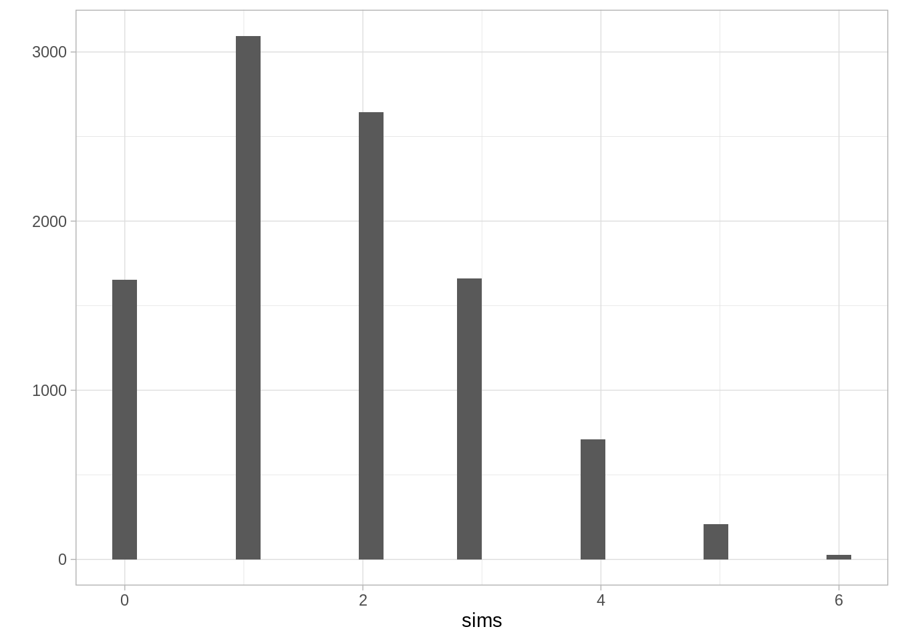
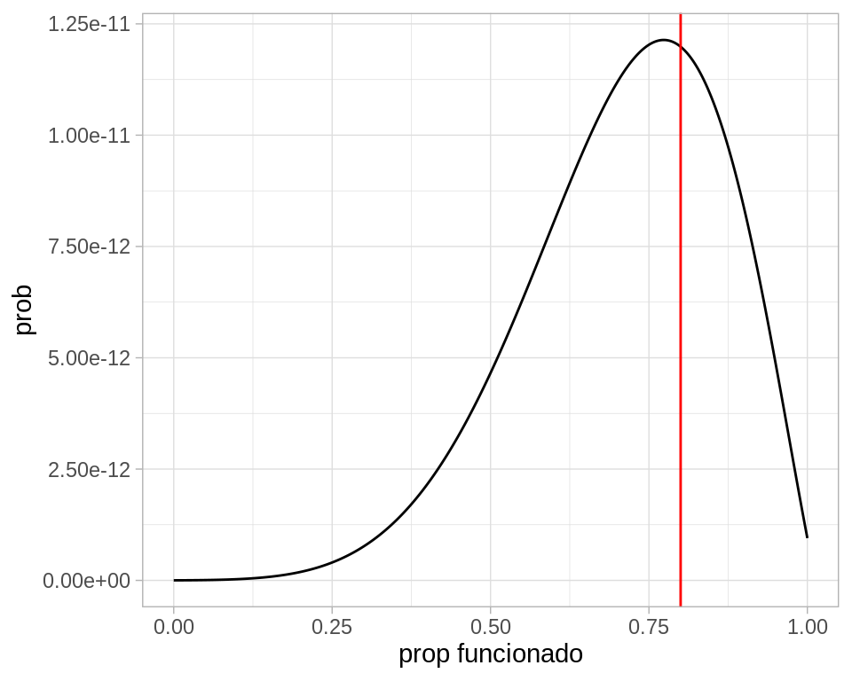

Uno los conceptos centrales de la probabilidad es el de probabilidad condicional:
Muchas veces queremos calcular probabilidades dada cierta información parcial: es decir, las probabilidades que queremos calcular son condicionadas a cierto tipo de información.
La probabilidad condicional nos permite modelar con probabilidad sistemas relativamente complejos a partir de componentes simples.
Muchos de los problemas de esta sección son de (Ross (1998)).
7.1 Probabilidad condicional en espacios equiprobables.
Supongamos que en un experimento simétro de \(n\) posibles resultados, sabemos que ocurrió el evento \(F\), es decir, un conjunto de resultados fijo. ¿Cómo podemos calcular la probabilidad de que ocurra un evento \(E\) dado que sabemos que \(F\) ocurrió? Esta probabilidad se escribe
\[P(E|F)\]
7.1.1 Ejemplo: dos dados
Supongamos que tiramos dos dados, y nos dicen que la suma de los dos datos es igual a 6. ¿Cuál es la probablidad condicional de haber tirado al menos un cinco dado que la suma es 6?
Solución: los resultados equiprobables que resultan en un tiro de suma 6 son \(F= \{ (5,1),(4,2),(3,3),(2,4),(1,5)\}\), que son 5 posibles resultados. En solamente 2 de ellos tiramos un cinco. Como estos resultados son equiprobables, si \(E\) es el evento “tirar al menos un 5”,
\[P(E|F) = 2/5\]
Podemos formalizar de la siguiente manera: para calcular \(P(E|F)\) contamos todos los resultados de \(F\) donde también ocurre \(E\) y dividimos entre las maneras en que puede ocurrir \(F\):
En nuestro caso hay muchos resultados posibles donde tiramos al menos un 5, por ejemplo \((5,1), (5,2), (5,6)\) y así sucesivamente. Sin embargo, solo en 2 de ellos la suma es 5.
En un espacio de resultados equiprobables, si \(E\) y \(F\) son eventos, entonces
\[P(E|F) = \frac{n(E\cap F)}{n(F)},\]
es decir, dividimos el número de maneras en que pueden ocurrir \(E\) y \(F\) simultáneamente entre el número de maneras en que puede ocurrir \(F\).
Nótese que otra manera de ver esta definición es como sigue: una vez que sabemos que ocurrió \(F\), restringimos todo nuestro análisis a resultados dentro de \(F\), y proseguimos como si se tratara de una probabilidad usual.
7.1.2 Ejemplo: dos volados
Supongamos que tiramos dos volados. Cuál es la probabilidad condicional de que los dos volados sean sol (evento \(E\)) dado que 1) El primer volado es sol? 2) Alguno de los dos volados es sol, 3) Los dos volados son águilas?
Hay 2 resultados donde el primer volado es sol (enuméralos), así que la primer probabilidad es \(P(E|F_1)=1/2\). Explica por qué la segunda probabilidad condicional es igual a \(P(E|F_2)=1/3\). ¿Cuánto vale \(P(E|F_3)\)?
7.1.3 Ejemplo: tres cartas
Supongamos que extraemos tres cartas al azar de una baraja de 52 cartas (13 son corazones). Nos muestran que la segunda y la tercera carta son corazones. ¿Cuál es la probabilidad condicional de que la primera sea un corazón?
Solución: como resultados para las primeras tres cartas seleccionadas tenemos \((x_1,x_2,x_3)\). Nos interesan solamente los resultados \((x_1, corazon_1, corazon_2)\). Existen \(13*12*11 + 39*13*12 = 7800\) resultados posibles (primero contamos los que tienen un corazón al principio, y luego los que no tienen un corazón al principio, de modo que la probabilidad que buscamos es
Interpreta la simplificación de arriba para describir una manera más simple de calcular esta probabilidad condicional.
7.2 Simulación y probabilidad condicional
Una manera de aproximar probabilidades condicionales es simulando el experimento que nos interesa, y calculando frecuencias relativas solamente sobre la información que sabemos que ocurrió: es decir, filtramos las simulaciones escogiendo sólo las que son consistentes con la información dada.
# A tibble: 52 × 3
numero figura carta
<int> <chr> <chr>
1 1 C 1 C
2 1 D 1 D
3 1 P 1 P
4 1 T 1 T
5 2 C 2 C
6 2 D 2 D
7 2 P 2 P
8 2 T 2 T
9 3 C 3 C
10 3 D 3 D
# … with 42 more rows
Esto nos da una aproximación de \(P(E|F)\). Nótese que si \(F\) es un evento con probabilidad baja, entonces será necesario correr más veces el experimento, pues el número de veces que ocurre \(F\) es relativamente bajo.
Podemos definir también la probabilidad condicional en general, para cualquier probabilidad \(P\) no necesariamente resultante de un modelo equiprobable:
La **probabilidad condicional* del evento \(E\) dado que ocurrió el evento \(F\) se define como
\[P(E|F) = \frac{P(E y F)}{P(F)}\]
7.3 Regla de la multiplicación
A veces nos interesa calcular la probabilidad de que dos eventos ocurran, y conocemos \(P(F)\) y \(P(E|F)\). En ese caso podemos usar la definición de probabilidad condicional para escribir al regla del producto:
\[P(EF) = P(F)P(E|F)\]
Por ejemplo, si queremos calcular la probablidad de extraer dos corazones de una baraja usual, tenemos que \(P(C_1) = 13/52 = 1/4\). \(P(C_2|C_1)\) es fácil de calcular, pues si la primera carta que sacamos es un corazón, entonces para la segunda extracción hay 51 cartas, de las cuales 12 son corazones, de forma que \(P(C_2|C_1) = 12/51\). Usando la regla del producto, quedamos con
Se divide al azar una baraja de 52 de cartas en 4 pilas iguales. Calcula la probabilidad de cada pila tenga exactamente un as.
Podemos hacer el evento \(E_1\) que el as de corazones y el de diamantes están en diferentes pilas, \(E_2\) el evento de que el as de corazones, el de diamantes, y el de tréboles están en diferentes pilas, y finalmente \(E_3\) el evento de que todos los ases están en diferentes pilas. Nótese que buscamos la probabilidad \(P(E_3)\), pero será más fácil si escribimos:
Primero, el as de corazones está en alguna de las pilas. La probabilidad de el as de diamantes no esté en esa pila es \(P(E_1) = 1 - 12/51 = 39/51\) (¿por qué?), pues la pila que tiene el as de corazones tiene otras 12 cartas de las 51 disponibles. La probabilidad de que el as de diamantes sea una de esas 12 cartas es entonces 12/51.
Si se cumple \(E_1\), entonces el as de corazones y de diamantes están en pilas distintas. Entonces la probabilidad de que el as de tréboles caiga en una de esas dos pilas es \(24/50\), así que
\[P(E_2|E_1) = 1 -24/50 = 25/50\]
Finalmente, si el as de corazones, diamantes y tréboles están en distintas pilas, entonces la probabilidad de que el de espadas caiga en la una de esas pilas es \(36/49\), de modo que
Una de las razones por las que es importante usar la teoría de probabilidad para manipular probabilidades es que las personas, naturalmente, tienden a hacer “cálculos mentales probabilísticos” incorrectos, lo cual a fin de cuentas lleva a decisiones mal informadas. Existe amplia evidencia de esto, ver por ejemplo el trabajo de: Kahneman y Tversky
“Before their work, economists had gotten far in their analyses of decision making under uncertainty by assuming that people correctly estimate probabilities of various outcomes or, at least, do not estimate these probabilities in a biased way […]. But Kahneman and Tversky found that this is not true: the vast majority of people misestimate probabilities in predictable ways.”
Ahora podemos descutir una de ellas, la falacia de conjunción. Consideremos la siguiente pregunta:
Linda is 31 years old, single, outspoken, and very bright. She majored in philosophy. As a student, she was deeply concerned with issues of discrimination and social justice, and also participated in anti-nuclear demonstrations.
¿Qué es más probable?
Linda is a bank teller.
Linda is a bank teller and is active in the feminist movement.
¿Qué crees que tiende a escoger la mayoria de las personas como la más probable? ¿Qué regla de probabilidad puedes usar para demostrar que esto es una falacia?
7.5 Regla de probablilidad total
Una regla que usaremos varias veces es la regla de probabilidad total, que establece que
\[P(E) = P(E|F)P(F) + P(E|F^c)P(F^c)\]
donde el evento \(F^c\) significa que \(F\)no ocurrió.
Esta regla es útil en muchos casos para calcular probabilidades de un evento dependiendo de la ocurrencia o no de otro.
Ejemplo
Sacamos dos cartas de una bajara de 52 cartas. Vimos un ejemplo donde queríamos calcular la probabilidad de \(N_2=\) la segunda carta que sacamos es negra. Argumentamos usando espacio equiprobables que \(P(N_2) = 0.5\).
Si \(N_1 =\) la primera carta es negra, entonces la ley de probabilidad total explica por qué pasa esto tomando en cuenta el resultado de la primera extracción:
Tenemos que \(P(N_2|N_1) = 25/51\) y \(P(N_1) = 1/2\)
Además, \(P(N_2|N_1^c) = 26/51\) y \(P(N_1^c) = 1/2,\)
La ley de probabilidades totales consiste de las reglas de ponderación usuales que conocemos.
Ejemplo
En un país hay 20% de adultos de 20 años o menos, y 80% de adultos de 21 años o más. Entre los adultos de 20 años o menos, el 90% solo usa plataformas digitales para ver televisión. Entre los adultos de 21 años o más, el 15% solo usa plataformas digitales para ver televisión. Si tomamos un adulto al azar de esta población, ¿cuál es la probabilidad de que solo use digital para ver TV?
La respuesta es
\[ 0.90(0.20) + 0.15(0.80) = 0.3\]
7.6 Ejercicio: dados y monedas
Supongamos que tiramos un dado. Tiramos tantos volados como el número que salió en la tirada de dado, y registramos el número de soles. ¿Cuál es la probabilidad de que obtengamos cero soles?
Sea \(X=\) número que obtuvimos en la tirada de dado, y sea \(Y=\) número de soles obtenidos.
Calcular directamente \(P(Y=0)\) puede hacerse de manera simple con la ley de probabilidad total, pues
\(P(Y=0|X=1) = 1/2\), prob de ningún sol en 1 volado
\(P(Y=0|X = 2) = 1/4\) prob de ningún sol en dos volados (suponiendo independencia de los volados)
\(P(Y=0|X=3) = 1/8\), prob de ningún sol en tres volados.
y así sucesivamente. Como \(P(X=i)=1/6\) para cualquier número del uno al seis, la probabilidad \(P(Y=0)\), usando probabilidad total, es
`stat_bin()` using `bins = 30`. Pick better value with `binwidth`.

La frecuencia relativa de cero soles es:
Código
sum(sims==0) /length(sims)
[1] 0.1655
Calcula también la probabilidad de obtener 2 soles o más en este experimento (puedes usar la simulación).
7.8 Regla de Bayes
La regla de Bayes es una fórmula que se utiliza para invertir probabilidades condicionales:
\[P(E|F) = \frac{P(F|E)P(E)}{P(F)},\]
que es una consecuencia fácil de la definición de probabilidad condicional. Es útil conocerla porque facilita resolver varios problemas de probabilidad que en un principio parecen difíciles.
Ejemplo
Supongamos que tenemos una baraja de 8 cartas, 4 negras y 4 blancas. Extraemos sucesivamente dos cartas a azar. Sea \(N_1=\) la primera carta es negra y \(B_2=\) la segunda carta es blanca. ¿Cuál es la probabilidad condicional de que la primera carta haya sido negra si nos dicen que la segunda fue blanca?
Aunque ya resolvimos problemas como este, parece confuso en un principio. Sin embargo, podemos calcular:
\[P(N_1|B_2) = \frac{P(B_2|N_1)P(N_1)}{P(B_2)}\]
Sabemos que \(P(B_2|N_1) = 4/7\), y que \(P(N_1)=1/2\) y \(P(B_2) = 1/2\), de modo que
\[P(N_1|B_2) = 4/7 > 1/2\]
es decir, si sabemos que la segunda carta fue blanca, eso hace más probable que la primera carta haya sido negra.
Ejemplo (parte 1)
Supongamos que una aseguradora cree que hay dos tipos de personas: unos con más riesgo de tener accidentes y otros con menos riesgo. Los datos muestran que una persona con riesgo alto tendrá un accidente en algún momento del año con probabilidad 0.04, y esta probabilidad baja a 0.01 para una persona de riesgo bajo. Si 10% de la población tiene riesgo alto, ¿cuál es la probabilidad de que un asegurado nuevo tenga un accidente un año después de comprar su póliza? (Nota: no sabemos si la persona nueva es de riesgo alto o bajo).
Puedes resolver son simulación, o usar la ley de probabilidad total. Si \(A\) es el evento de tener un accidente, \(R_A\) es el evento de que la persona es de riesgo alto y \(R_B\) es el evento que la persona es de riesgo bajo, entonces
\[P(A) = P(A|R_A)P(R_A) + P(A|R_B)P(R_B)\]
pues \(R_A\) y \(R_B\) cubren todas las posibilidades. Entonces
De manera que al principio la probabilidad no condicionada de ser de alto riesgo era de 10%, y cuando tiene un accidente esta probabilidad se triplica.
Ejemplo
Supongamos que en un concurso de TV tenemos tres puertas y debemos escoger una. Atrás de una de ellas hay un premio, y no hay nada detrás de las otras dos. Escogemos una de las puertas.
Ahora el conductor (que sabe dónde está el premio), abre una puerta vacía, y nos pregunta si queremos cambiar o no de puerta. ¿Cuál es la mejor estrategia, cambiar o quedarnos con la que escogimos al principio?
Veamos la estrategia de quedarnos con la puerta que escogimos. Sin perdida de generalidad, suponemos que escogemos la puerta 1.
Ahora observamos que el conductor abre la puerta 2.
Sea \(E_1=\) el premio está en la puerta 1, y \(A_2=\) el conductor abre la puerta 2, donde no hay premio. Por la regla de bayes:
pues \(P(A_2|E_1^c) = 1/2\), es decir, si el premio no está en la puerta 1, la probabilidad de que abrir la puerta 2 es la probabilidad de que el premio esté en la puerta 2 dado que no está en la puerta 1
Sustituyendo,
\[P(E_1 | A_2) = \frac{(1/2)(1/3)}{1/2} = 1/3\]
Asi que si cambiamos, la probabilidad de ganar es de 2/3.
Simula para verificar tus resultados.
7.9 Independencia
Cuando tenemos dos eventos, y tenemos que \(P(E|F) > P(E)\) o \(P(F|E) > P(F)\) (checa que una implica la otra), decimos que los eventos tienen dependencia positiva: cuando sabemos que uno ocurre, la probabiidad del otro aumenta.
En algunos casos \(P(E|F) = P(E)\) y \(P(F|E) = P(F)\), lo cual sucede cuando \(P(EF)=P(F)P(E)\). En este caso decimos que los eventos \(E\) y \(F\) son independientes. Nótese que esto no quiere decir que no haya ninguna conexión entre \(E\) y \(F\) (puede ser que la ocurrencia de \(F\) cambie las maneras en que puede ocurrir \(E\)), sólo que la probabilidad de uno no cambia al condicionar al otro.
Ejemplos
Muestra que si sabemos que sacar un corazón de una baraja de 52 cartas es independiente de sacar un as
Muestra que en nuestro modelo equiprobable de dos volados, el resultado de un volado es independiente del resultado del otro.
El evento “la suma de la tirada de dos dados” es independiente del resultado del primer dado.
7.10 Independencia de más de dos eventos
Nótese que cuando los eventos \(E\) y \(F\) son indpendientes, por definición
\[P(E \,y\, F) = P(E) P(F)\]
Decimos que los eventos \(E\), \(F\) y \(G\) son independientes cuando
\(P(E \,y \,F \, y \, G) = P(E)P(F)P(G)\)
\(P(E \,y \,F ) = P(E)P(F)\)
\(P(E \,y \, G) = P(E)P(G)\)
\(P(F \, y \, G) = P(F)P(G)\)
y así sucesivamente para un número mayor de eventos: si los eventos son independientes, la probabilidad de que ocurran cualquier subconjunto de ellos es es el producto de la probabilidades de que cada uno de ellos ocurra.
En general, si \(E_1, E_2, \ldots, E_n\) son eventos independientes, entonces
\[P(E_1\, y \, E_2 \, y \cdots \,y E_n) = P(E_1)P(E_2)\cdots P(E_n)\]
Ejercicio
Hacemos un número indefinido de pruebas independientes, y cada una de ellas puede resultar en éxito con probabilidad \(p\) y fracaso con probabilidad \(1-p\). Calcula la probabilidad de que 1) al menos un éxito suceda en la primeras 20 pruebas. 2) todas las pruebas sean éxito y 3) exactamente 5 de las 2o pruebas sean éxito.
Ejemplo: número de seises
Construye un modelo para el número de seises en dos tiradas de dados. Escribimos \(X\)= número de seises que obtenemos en dos tiradas de dado.
Los resultados posibles son 0, 1 y 2 seises. Para calcular la probablidad de tirar dos seises hacemos:
Observación: en muchos casos, la independencia se construye como un supuesto para construir modelos más complejos, cuando este supuesto es adecuado. Un ejemplo es cuando tomamos muestras de una población: si tomamos cada muestra independientemente de las otras, analizar los resultados es mucho más fácil que cuando hay esquemas complejos de dependencias entre los datos que xtraemos.
7.11 Intro a estimación por máxima verosimilitud
Uno de los procedimientos más estándar para estimar cantidades desconocidas es el método de máxima verosimilitud. Los estimadores de máxima verosimilitud tienen propiedades convenientes, y dan en general resultados razonables siempre y cuando los supuestos sean razonables.
Máxima verosimilitud es un proceso intuitivo, y consiste en aprender o estimar valores de parámetros desconocidos suponiendo para los datos su explicación más probable. Para esto, usando supuestos y modelos requeriremos calcular la probabilidad de un conjunto de observaciones.
Ejemplo 1
Supongamos que una máquina produce dos tipos de bolsas de 25 galletas: la mitad de las veces produce una bolsa con 5 galletas de avena y 20 de chispas de chocolate, y la otra mitad produce galletas con 23 galletas de avena y 2 de chispas de chocolate.
Tomamos una bolsa, y no sabemos qué tipo de bolsa es (parámetro desconocido). Extraemos al azar una de las galletas, y es de chispas de chocolate (observación).
Por máxima verosimilitud, inferimos que la bolsa que estamos considerando tiene 5 galletas de avena. Esto es porque es más probable observar una galleta de chispas en las bolsas que contienen 5 galletas de avena que en las bolsas que contienen 23 galletas de avena. Podemos cuantificar la probabilidad que “acertemos” en nuestra inferencia.
Cómo se aprecia en el ejemplo anterior, el esquema general es:
Existe un proceso del que podemos obtener observaciones de algún sistema o población real.
Tenemos un modelo probabilístico que dice cómo se producen esas observaciones a partir del sistema o población real.
Usualmente este modelo tiene algunas cantidades que no conocemos, que rigen el proceso y cómo se relaciona el proceso con las observaciones.
Nuestro propósito es:
Extraemos observaciones del proceso:
\[x_1, x_2, \ldots, x_n\]
Queremos aprender de los parámetros desconocidos del proceso para calcular cantidades de interés acerca del sistema o población real
En principio, los modelos que consideramos pueden ser complicados y tener varias partes o parámetros. Veamos primero un ejemplo clásico con un solo parámetro, y cómo lo resolveríamos usando máxima verosimilitud.
Nota: Cuando decimos muestra en general nos referimos a observaciones independientes obtenidas del mismo proceso (ver la sección anterior para ver qué significa que sea independientes). Este esquema es un supuesto que simplifica mucho los cálculos, como discutimos antes. Muchas veces este supuesto sale del diseño de la muestra o del estudio, pero en todo caso es importante considerar si es razonable o no para nuestro problema particular.
Ejemplo
Supongamos que queremos saber qué proporción de registros de una base de datos tiene algún error menor de captura. No podemos revisar todos los registros, así que tomamos una muestra de 8 registros, escogiendo uno por uno al azar de manera independiente. Revisamos los 8 registros, y obtenemos los siguientes datos:
donde 1 indica un error menor. Encontramos dos errores menores. ¿Cómo estimamos el número de registros con errores leves en la base de datos?
Ya sabemos una respuesta razonable para nuestro estimador puntual, que sería \(\hat{p}=2/8=0.25\). Veamos cómo se obtendría por máxima verosimilitud.
Según el proceso con el que se construyó la muestra, debemos dar una probabilidad de observar los 2 errores en 8 registros. Supongamos que en realidad existe una proporción \(p\) de que un registro tenga un error. Entonces calculamos
pues la probabilidad de que cada observación sea 0 o 1 no depende de las observaciones restantes (la muestra se extrajo de manera independiente).
Esta ultima cantidad tiene un parámetro que no conocemos: la proporcion \(p\) de registros con errores. Así que lo denotamos como una cantidad desconocida \(p\). Nótese entonces que \(P(X_2=1) = p\), \(P(X_3=0) = 1-p\) y así sucesivamente, así que la cantidad de arriba es igual a
\[p(1-p)p(1-p)(1-p)p(1-p)(1-p)(1-p) \]
que se simplifica a
\[ L(p) = p^2(1-p)^6\]
Ahora la idea es encontrar la p que maximiza la probabilidad de lo que observamos. En este caso se puede hacer con cálculo, pero vamos a ver una gráfica de esta función y cómo resolverla de manera numérica.
Cuando cambiamos la \(p\), la probabilidad de observar la muestra cambia. Nos interesa ver las regiones donde la probabilidad es relativamente alta.
El máximo está en 0.25.
Así que el estimador de máxima verosimilitud es \(\hat{p} = 0.25\)
Obsérvese que para hacer esto usamos:
Un modelo teórico de cómo es la población con parámetros y
Información de como se extrajo la muestra,
y resolvimos el problema de estimación convirtiéndolo en uno de optimización.
Probamos esta idea con un proceso más complejo:
7.11.1 Ejemplo 2
Supongamos que una máquina puede estar funcionando correctamente o no en cada corrida. Cada corrida se producen 500 productos, y se muestrean 10 para detectar defectos. Cuando la máquina funciona correctamente, la tasa de defectos es de 3%. Cuando la máquina no está funcionando correctamente la tasa de defectos es de 10%
Supongamos que escogemos al azar 11 corridas, y obervamos los siguientes datos de número de defectuosos:
\[1, 0, 0, 3 ,0, 0, 0, 2, 1, 0, 0\]
La pregunta es: ¿qué porcentaje del tiempo la máquina está funcionando correctamente?
Primero pensemos en una corrida. La probabilidad de observar una sucesión particular de \(r\) defectos es
\[0.03^r(0.97)^{(10-r)}\]
cuando la máquina está funcionando correctamente.
Si la máquina está fallando, la misma probabilidad es
\[0.2^r(0.8)^{(10-r)}\]
Ahora supongamos que la máquina trabaja correctamente en una proporción \(p\) de las corridas. Entonces la probabilidad de observar \(r\) fallas se calcula promediando (probabilidad total) sobre las probabilidades de que la máquina esté funcionando bien o no:
Y esta es nuestra función de verosimilitud para una observación.
Suponemos que las \(r_1,r_2, \ldots, r_{11}\) observaciones son independientes (por ejemplo, después de cada corrida la máquina se prepara de una manera estándar, y es como si el proceso comenzara otra vez). Entonces tenemos que multiplicar estas probabilidades para cada observación \(r_1\):
Código
calc_verosim <-function(r){ q_func <-0.03^r*(0.97)^(10-r) q_falla <-0.2^r*(0.8)^(10-r)function(p){#nota: esta no es la mejor manera de calcularlo, hay # que usar logaritmos.prod(p*q_func + (1-p)*q_falla) }}verosim <-calc_verosim(c(1, 0, 0, 3, 0, 0, 0, 2, 1, 0, 0))verosim(0.1)
[1] 2.692087e-14
Código
dat_verosim <-tibble(x =seq(0,1, 0.001)) %>%mutate(prob =map_dbl(x, verosim))ggplot(dat_verosim, aes(x = x, y = prob)) +geom_line() +geom_vline(xintercept =0.8, color ="red") +xlab("prop funcionado")

Y nuestra estimación puntual sería de alrededor de 80%.
Aspectos numéricos
Cuando calculamos la verosimilitud arriba, nótese que estamos multiplicando números que pueden ser muy chicos (por ejemplo \(p^6\), etc). Esto puede producir desbordes numéricos fácilmente. Por ejemplo para un tamaño de muestra de 1000, podríamos tener que calcular
Código
p <-0.1proba <- (p ^800)*(1-p)^200proba
[1] 0
En estos casos, es mejor hacer los cálculos en la escala logarítmica. El logaritmo convierte productos en sumas, y baja exponentes multiplicando. Si calculamos en escala logaritmica la cantidad de arriba, no tenemos problema:
Código
log_proba <-800*log(p) +200*log(1-p)log_proba
[1] -1863.14
Ahora notemos que
Maximizar la verosimilitud es lo mismo que maximizar la log-verosimilitud, pues el logaritmo es una función creciente. Si \(x_{max}\) es el máximo de \(f\), tenemos que \(f(x_{max})>f(x)\) para cualquier \(x\), entonces tomando logaritmo, \[log(f(x_{max}))>log(f(x))\] para cualquier \(x\), pues el logaritmo respeta la desigualdad por ser creciente.
Usualmente usamos la log verosimilitud para encontrar estimador de máxima verosimilitud
Hay razónes teóricas y de interpretación por las que también es conveniente hacer esto.
Ross, Sheldon M. 1998. A First Course in Probability. Fifth. Upper Saddle River, N.J.: Prentice Hall.